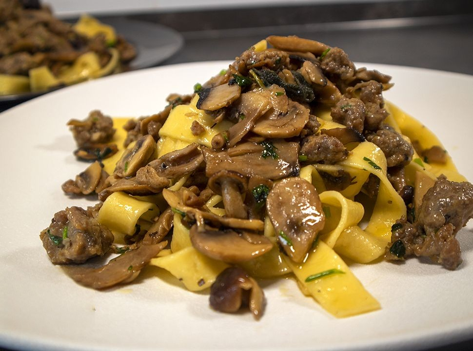

Pappardelle con funghi e salsiccia

Descrizione del piatto
Le Pappardelle con Funghi e Salsiccia è un saporito primo piatto autunnale, facile e veloce da preparare!
Oggi preparerò questo squisito piatto con questi meravigliosi e profumatissimi funghi pioppini, voi potete utilizzare qualsiasi tipo di fungo, chiodini, porcini, champignon…!
Ingredienti
- 400 g Pappardelle
- 300 g di Funghi champignon
- 150 g di Funghi chiodini
- 150 g di Pangrattato
- 3 Salsiccie
- 1 Scalogno
- 1 spicchio d' Aglio
- 1 Peperoncino
- q.b. di Salvia, Rosmarino, Prezzemolo
- q.b. di Olio, Sale, Pepe
Procedimento
- In una padella abbastanza ampia inserire un fondo di olio e.v.o., uno spicchio d'aglio in camicia 1 peperoncino e lo scalagno tritrato. Accendere la fiamma e aggiungere il rosmarino e la salvia. Appena l'ilio prende calore aggiungere i funghi che abbiamo già pulito e tagliato in precedenza e regolare con sale e pepe. Dopo 5 minuti di cottura eliminare il budello dalle salsiccie e aggiungere in cottura tagliandole a pezzetti.
- Cuocere funghi e salsiccia per 15 minuti circa, fino a quando l'acqua rilasciata dai funghi non sarà completamente evaporata. Calare la pasta in acqua bollente salata e cuocere fino ad 1 minuto prima del termine della sua cottura.
- Scolare direttamente in padella e mescolare le pappardelle con il sughetto. Aggiungere una generosa spolverata di prezzemolo tritrato e servire.